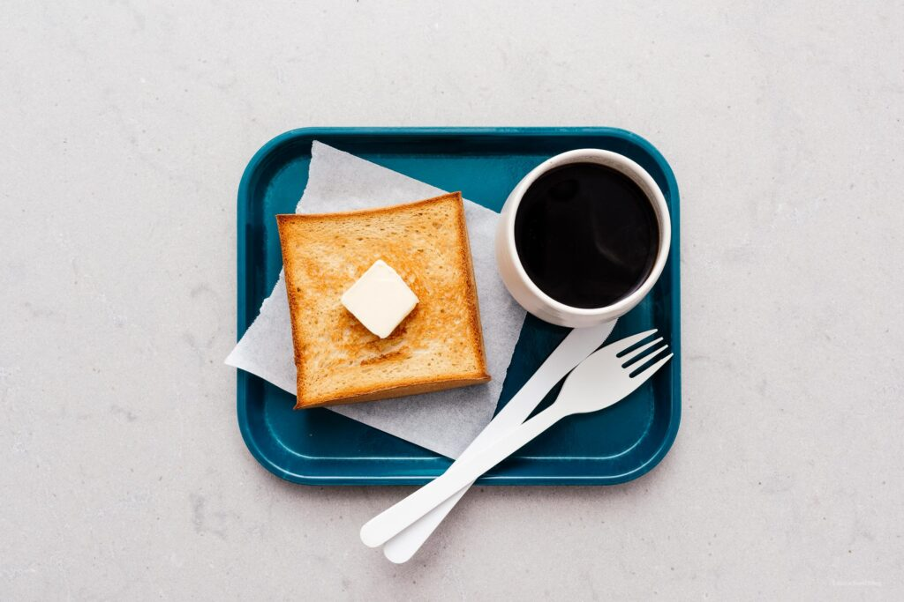

How to make the best Japanese shokupan Milk bread

INGREDIENTS
- 120 grams water warm
- 1 tsp active dry yeast
- 250 grams bread flour
- 30 grams sugar
- 1/4 tsp salt
- 1/2 large egg lightly beaten, about 1.5 tbsp (28 grams)
- 25 grams butter room temp
INSTRUCTION
- Sprinkle the yeast onto the warm water/milk. Let proof while you complete the next steps
- In the bowl of your mixer, stir together the flour, sugar and salt.
- Whisk the egg into the yeast mixture, then add to the dry ingredients. Use a wooden spoon to mix until it comes into a ball and then switch to a dough hook and knead until the dough pulls away cleanly from the sides
- Add the room temperature butter and continue to knead, about 10-12 minutes, until very supple and the dough reaches the windowpane stage – take a piece of dough about the size of a golf ball and stretch it out between your fingers and thumbs. If you can stretch it without the dough breaking, you’re good to go. Transfer to a clean bowl and cover with plastic wrap.
- Place in a warm spot and let rise until doubled, about 1 hour.
- Take the dough and tip it out onto a lightly floured surface. Punch down lightly then roll out into a large oval
- Bring the two sides of the oval towards the middle
- Then roll up.Place in a pullman loaf pan (I used a non-stick pan, lightly oil or butter your pan if it isn’t non-stick), cover and let proof until 1 inch below the top, about 40 minutes to 1 hour. Heat the oven to 355°F after the dough has been proofing for 30 minutes.
- Slide the lid on the pan and bake for 40 minutes to 1 hour or until the bread is golden and cooked through. Remove from the pan immediately and cool on a wire rack. Slice and enjoy!
GO TO RECIPEES